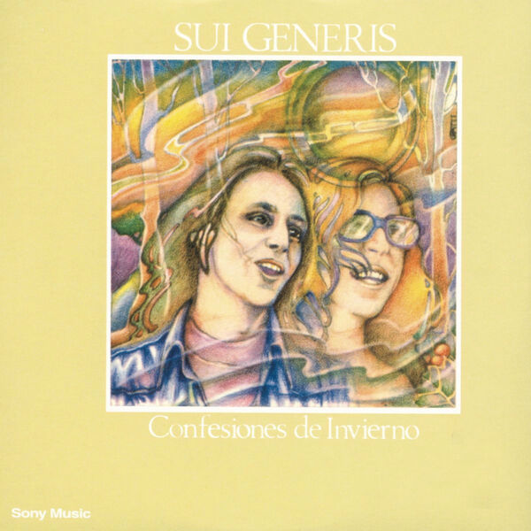
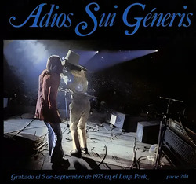
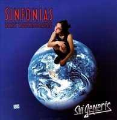

SUI GENERIS
-
VIDA (1972) Álbum de estudio debut.
-
CONFESIONES DE INVIERNO (1973) Segundo álbum de estudio.
-
PEQUEÑAS ANÉCDOTAS SOBRE LAS INSTITUCIONES (1974) Tercer álbum de estudio.
-
ADIÓS SUI GENERIS VOL I (1975) Álbum en vivo de la despedida.

-
ADIÓS SUI GENERIS VOL II (1975) Álbum en vivo de la despedida.
-
ADIÓS SUI GENERIS III (1996) Álbum en vivo de la despedida.

-
SINFONÍA PARA ADOLESCENTES (2000) Álbum de estudio póstumo.
-
SI - DETRÁS DE LAS PAREDES (2001) Álbum recopilatorio.